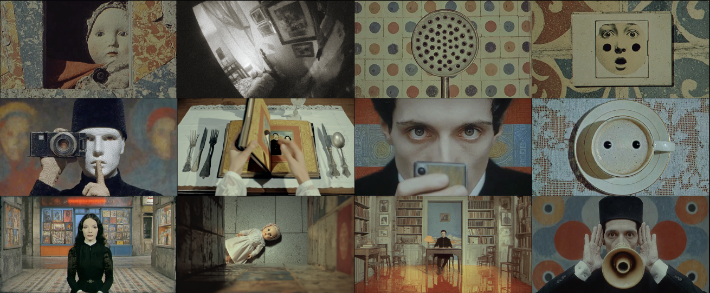

A short film responding to the 2025 Maskpark incident, examining how voyeurism is normalised and hidden within everyday spaces.
Women are recorded, watched, and disseminated by cameras. This is the story of a woman who finds herself being "watched" by her husband and decides to fight back. She bought the same doll with a camera hidden in it, so that her eyes could look back at the victims. When the gaze returns to the starting point, everyone is a participant.
Tools used: MidJourney,Jimeng,Kling,Suno.
In July 2025, a massive sexual cybercrime network known as MaskPark was exposed in China. Operating through encrypted platforms like Telegram, it had over 900,000 members, with at least 100,000 Chinese men actively contributing. The group shared illegally recorded videos and private images of women—captured in schools, subways, malls, public restrooms, hospitals, even ultrasound rooms. Hidden cameras were concealed in everyday objects: shampoo bottles, shower heads, speaker boxes. Some of the most disturbing footage came from men secretly filming their wives, girlfriends, or female relatives. Minors were among the victims. This is not just a Chinese problem—it’s a human rights crisis. It reveals how far people will go when they believe they won’t be caught, and how fragile women’s safety is in public spaces, even when fully clothed, even when doing nothing wrong.
Name: Begonia
Identity: Young Mother
Background:
She lives with her husband and young child. There's a crib in her bedroom, and children's toys are common throughout the house. She lives under the undercurrent of being secretly photographed and monitored—a gaze she knows comes from those closest to her.
Appearance and Demeanor:
She stares straight ahead, her eyes cold and distant. Her steps are steady, and she never averts gazes, nor does she alter her expression to please. Even amidst the constant surveillance and prying eyes, she maintains a proud demeanor.
She is not merely a victim, but a responder to the gaze — she has seen through them all along.
